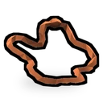

Spoilers: this page gives away the end of the Red Desert Story.
The Chain
The Chain is step 4 of What the Gate Kept, given by The Old Man.
Objective
Bring the Old Man his chain.
Exactly: Hand over 
They still have the chain they kept me on. Their leader in the gold mask carries it. Bring it to me, and I'll watch it melt.The Old Man
Requirements
- Turn in What Came Through first.
- It can be worked on before level 55, and is turned in at it.
Rewards
 Gold Coin ×5,000
Gold Coin ×5,000 Respec Shard ×2
Respec Shard ×2
7,575 experience.
Quest items
- The Old Man's Chain from Lesser Cult Leader, 1/4 a kill while this quest wants it
Walkthrough
Not written yet
How to get The Chain done quickly.
Changes
Not written yet
What changed in this quest, update by update.
| What the Gate Kept | |
|---|---|
| Steps | Loose Ends · The Gold Mask · What Came Through · The Chain |
| Next | The last step |